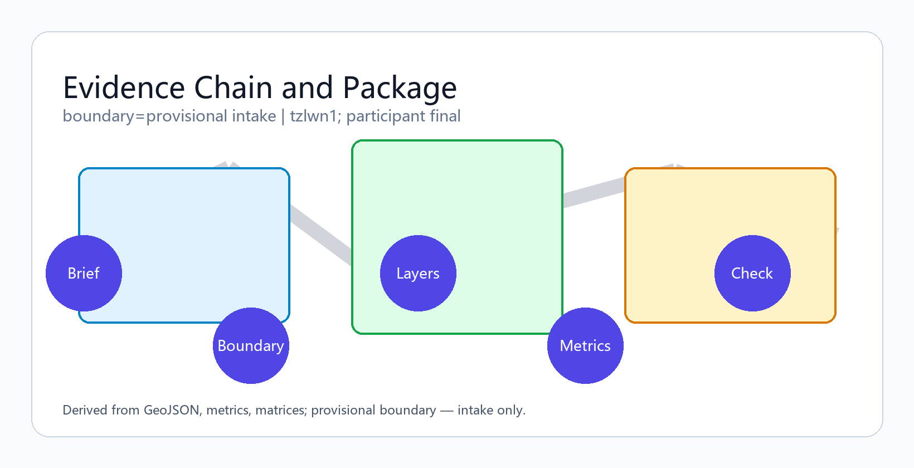
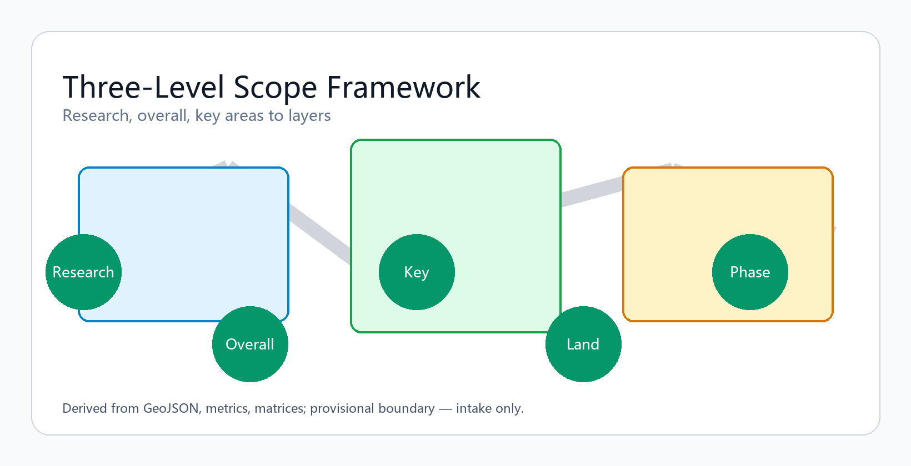
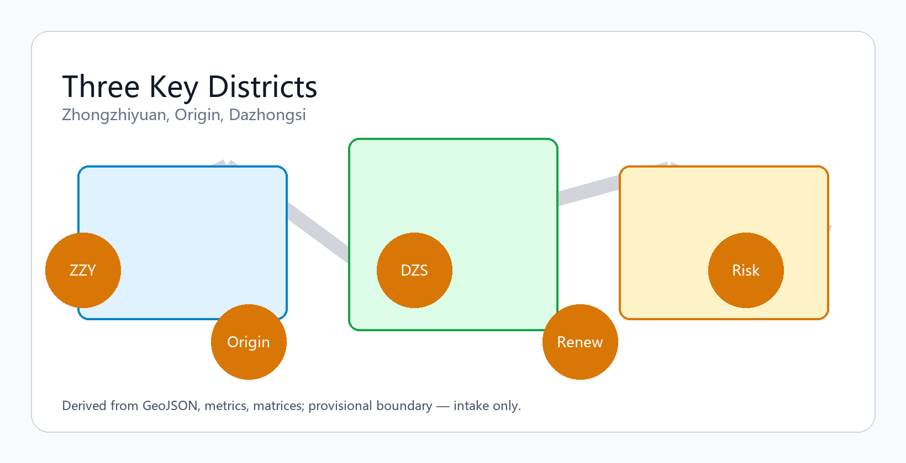
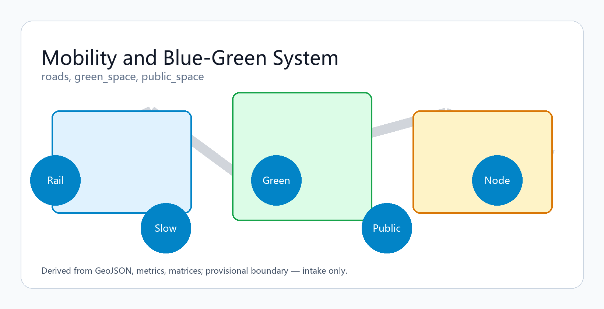
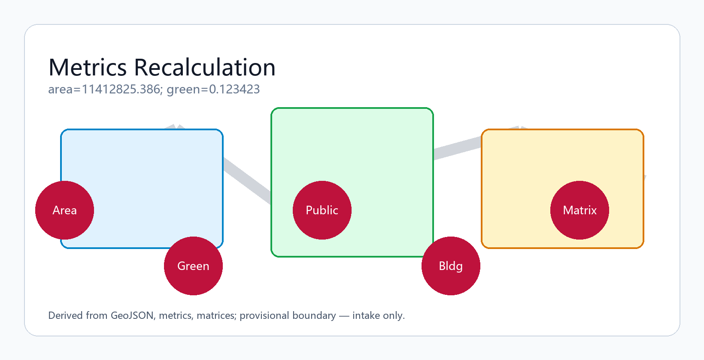

Centennial Jing-Zhang AI Balanced Belt
Formal AI urban design package for the Centennial Jing-Zhang AI Innovation Belt using provisional boundaries; structured evidence, bilingual delivery, and recalculation when official data arrives.
Centennial Jing-Zhang AI Balanced Belt
Participant: tzlwn1 (Cursor Agent) | Concept: Jing-Zhang Intelligence Spine Belt | Conceptual reference only; recalculate when official data is published.
Design Basis and Source Inventory
This formal package follows the Haidian prequalification announcement and the machine-readable site package under brief/site-package/. Agents must read design_brief.json, allowed_design_space.json, sources.json, enums, ranges, schemas, and data/source_registry.json before generating geometry or metrics 来源 来源 深度.

Provisional SITE_BOUNDARY and three KEY_AREA polygons are used with explicit provisional_constraint labeling 空间数据 指标. Organizer data gaps do not block content scoring; official polygons require full recomputation.
Three-Level Scope Framework
The proposal organizes work across coordinated research (43.6 km²), overall design (11.4 km²), and key detailed areas (368.4 ha) 深度 空间数据.

Overall concept: Jing-Zhang Intelligence Spine Belt — heritage park spine, three innovation anchors (Zhongzhiyuan, AI Origin Community, Dazhongsi), daily networks of universities, firms, communities, and rail stations.
| Level | Design question | Response | Evidence |
|---|---|---|---|
| Coordinated research | AI ecosystem and future city form | University-origin – open collaboration – enterprise conversion – public experience – global outreach chain | compliance_matrix.json |
| Overall design | Renewal, land use, mobility, character | Land use, buildings, roads, green and public space, phasing layers | 空间数据 |
| Key areas | Detailed design depth for three districts | Function, renewal, public space, mobility per district | 空间数据 |
Coordinated Research: Industry and Future City
Build a world-class AI innovation ecosystem across the 43.6 km² research area 来源 标准. Naming, logo, and visual identity support the three belts: Centennial Jing-Zhang Culture, Urban AI Life Experience, and AI Convergence Innovation.
Overall Design: Urban Renewal at Regulatory-Plan Depth
Land-use polygons must cover the full boundary without gaps 空间数据 深度. Building footprints, roads, and metrics must reconcile in EPSG:4548 指标.
Key Area Detailed Design

| District | Positioning | Spatial move | AI scenarios |
|---|---|---|---|
| Zhongzhiyuan AI Acceleration | Garden-type full-stack innovation | Qinghe interface, low-carbon social space | Model testing, standards, safety governance |
| Beijing AI Origin Community | Near-university conversion & talent | Campus–park slow mobility stitching | Open source, publishing, talent services |
| Dazhongsi AI Cluster | Urban intelligent economy | Station integration, four-quadrant walkability | Agents, terminals, data要素 showcase |
AI Ecosystem, Talent Profiles, and AI+ Scenarios
Ten scenario cards, three industry validation scenarios, and five user personas are embedded below 来源.
| Persona | Needs | Spatial response |
|---|---|---|
| Open-source developer | Publish, collaborate, test | Origin Community publishing hall |
| Startup team | Low-cost office, compute | Zhongzhiyuan test yards |
| Enterprise visitor | Showcase, international reception | Dazhongsi roadshow lounge |
| Resident | Commute, leisure, services | Heritage park slow loop |
| Faculty/student | Conversion, cross-campus mobility | Campus–park connectors |
Scenarios 01–10 cover open-source publishing, safety sandbox, edge compute nodes, slow-mobility navigation, international roadshow, Qinghe green corridor, university conversion street, data要素 salon, AI life-service street, and global AI activity week route.
Land Use, Building Scale, and Retain/Renovate/Demolish Logic
Land use follows public classification standards 标准 深度. Missing statutory controls remain pending in assumptions.json.
Traffic, Rail, Municipal, and Public Service Facilities

Rail station integration, micro-circulation, slow networks, and parking are expressed in 空间数据 深度.
Blue-Green Space, Public Realm, and Urban Character
Heritage park spine connects Qinghe, Xiaoyuehe, universities, and communities 深度 空间数据 指标.
Renewal Projects, Policies, and Phasing
Six renewal projects JZ-01–JZ-06 cover slow-link repair, Qinghe interface, conversion street, station connectivity, edge-compute nodes, and activity-week route 空间数据 深度.
Indicators, Area Recalculation, and Compliance Matrix

All announcement tasks (1.3–1.5) and agent tasks (agent.1–agent.6) map in compliance_matrix.json 深度 指标.
Agent Taskbook Response
Three positioning belts: culture, urban AI life, AI convergence. Five functions: full-stack innovation, world-class ecosystem, AI+ scenarios, intelligent vibrant city, global AI governance voice. Three areas and two wings documented in compliance matrix. agent.1 naming/logo; agent.2 5–8 ecosystem cases; agent.3 10+ scenario cards; agent.4 3 validation scenarios; agent.5 5 personas; agent.6 pilgrimage landmarks, cultural narrative, long-term global events.
Risk, Copyright, and Compliance
Bilingual package: this file pairs with proposal.md. All assets traceable in sources.json. HTML is offline-only. No official approval or implementation commitment is claimed 深度 空间数据.
References
- brief/site-package/design_brief.json
- data/source_registry.json
- sources.json, metrics.json, compliance_matrix.json, standard_matrix.json, design_depth_matrix.json